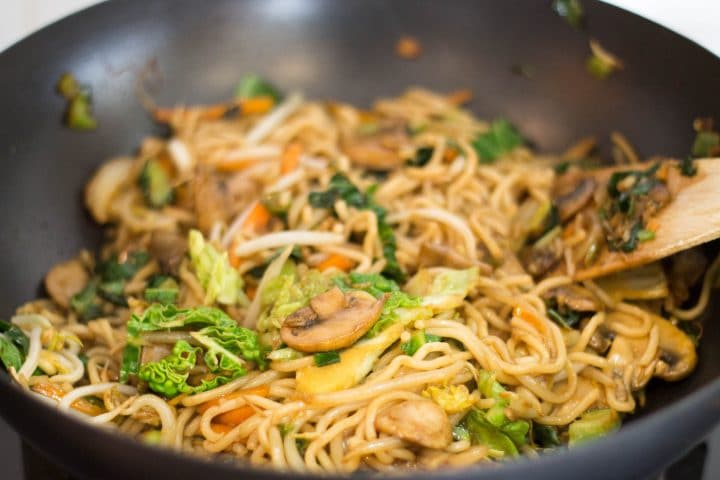

Cook your noodles so that they are al dente with some bite. For most noodles, this means cooking just a few minutes in boiling water, but thinner noodles, like may just need to be soaked.
The trick to perfect noodle stir-fry is to cook the noodles until they are al dente or just slightly undercooked and then when drained, rinse them with cold water to stop the cooking process.
Doing it this way will prevent the noodles from getting overcooked and soggy when you add them to the stir-fry.
Noodles stir-fry better if you shake them after draining until dry as possible. They shouldn’t be wet to the touch.
To keep your noodles from sticking before adding to the wok, add them back to their pot after draining and toss them with a little sesame oil or cooking oil.
The trick to the perfect noodle stir-fry is to cook the noodles until they are al dente or just slightly undercooked and then rinse them with cold water to stop the cooking process.
A traditional Chow Mein has boiled noodles that are stir-fried until slightly crisped, while Lo Mein is boiled then tossed in a sauce without cooking the noodles in the wok.
The noodles in Lo Mein and Chow Mein are about the same, both use egg noodles, but Lo Mein noodles are sometimes thicker.
Make a better than takeout version of Classic Chinese Lo Mein with authentic ingredients that can be thrown together in no time flat!